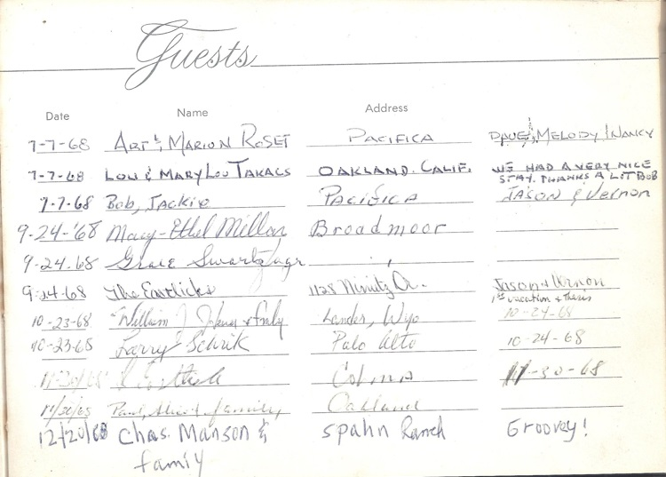
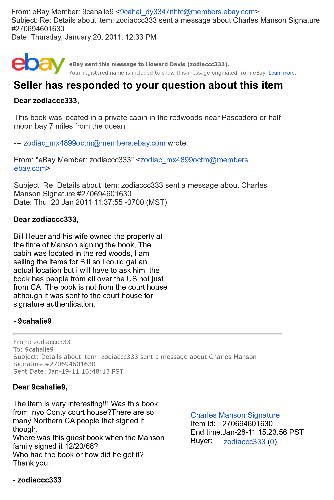
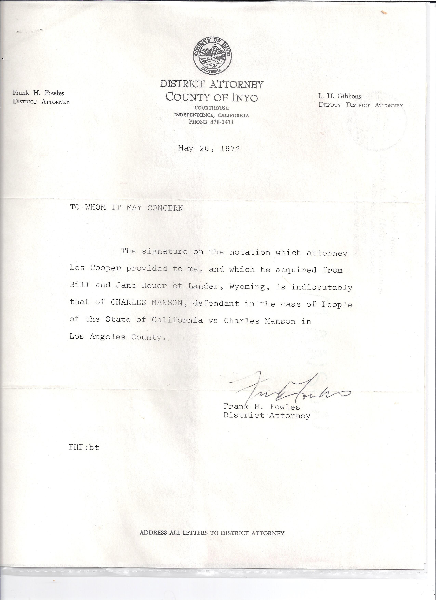
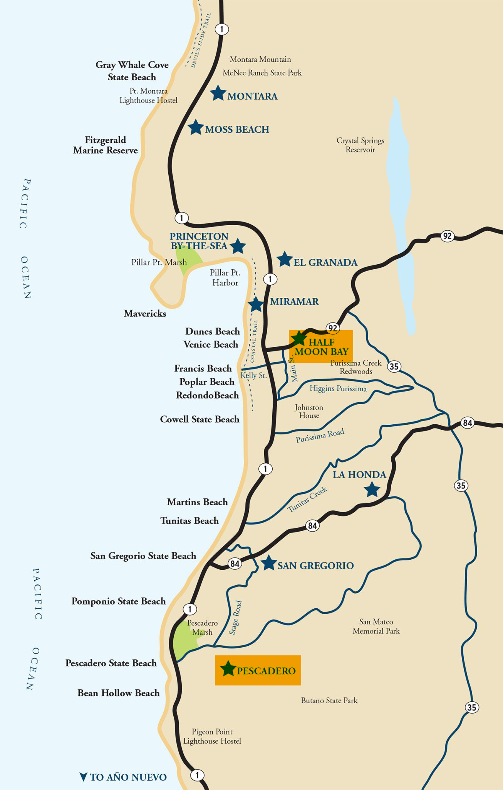
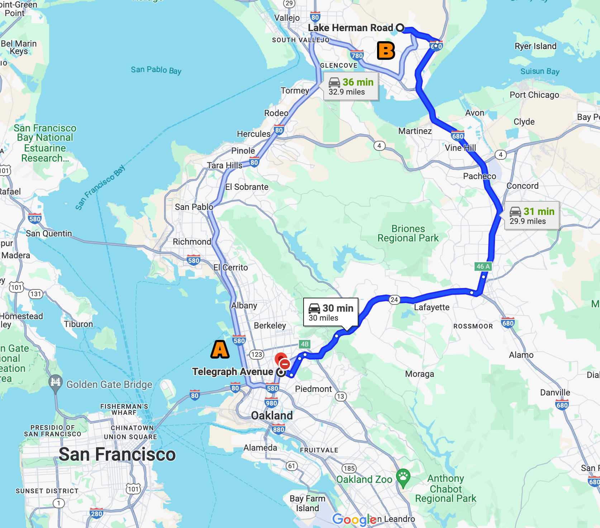

|
Manson Family Guest Book Signature |
|
|
|
 |
| |
|
This
guest book was purchased on eBay by researcher Deborah
Silva who has kindly
allowed us to post it on this site. On the bottom line
of this page of the book we find pictured that Charles
Manson signed the guest book for his Family on
12-20-1968. This date is a familiar one to Zodiac
researchers. It was the date that Betty Lou Jensen and
David Faraday were shot and killed by Zodiac on Lake
Herman Road in Benicia, California. See our book for
information on this double murder. |
| |
|
The following discussion
with the seller on eBay was to pinpoint where this
guestbook was located when it was signed by Charles Manson. |
|
|
|
 |
| |
|
Law
Enforcement in Inyo County, California verified the
signature as Manson's in 1972. They had arrested Manson
and his people and sent them to Los Angeles to be tried
for murder. It certainly looks like one of the ways
Manson wrote his name when he printed. |
| |
|
 |
| |
|
 |
| |
|
Charles
Manson taught his Family that whenever one was involved
in a crime they should always set up an alibi if at all
possible. How would this instruction apply to Manson? He
was supposed to be in Southern California not Northern
California. Would he have a reason to place this date in
a guest book at a cabin very near where this double
murder transpired? |
| |
|
Researchers of and authors about Charles Manson point
out that Manson suddenly decided to take a trip with a
few of his associates to Sacramento in Northern
California in December of 1968. This stay lasted for two
weeks or more. Our best source says they came back to
Los Angeles late in December of that year.
Tex Watson said that while there they "traveled all over Northern
California" visiting friends, etc. It was during this
trip that Tex noted a very "strange transformation going
on in Manson." He had never seen so much of this before
that years later he still wondered about the change in
his personality during this journey. He said, "I've
never really known exactly what Charlie was looking for
during the aimless weeks we hung around Sacramento . . .
It was as if Charlie were waiting for some kind of
direction, something to happen . . . Now he seemed to
draw into himself sometimes. There seemed to be
something going on in his head that he couldn't share
with us." |
|
|
|
We
believe that, after interpreting the Beatles' Only A
Northern Song, that "something going on in his head"
was Manson planning to kick off his coming revolution in
Northern California by "murdering people at random" to
"spread fear" for Helter Skelter. Later others would
kill and spread fear in Southern California. Both areas
would experience seemingly random murders during the
same time period. When one reads the news accounts of
those years 1969-70 it can be seen that the Zodiac in
Northern California and Manson's people in Southern
California were terrorizing the populations in their
respective areas. As is shown elsewhere on this site,
Tex Watson said that Manson's plan was to terrorize
three west coast cities with murders and violence —
"[J]ust like Sharon Tate and the LaBianca's." We believe
he was referring to San Francisco, Los Angeles and San
Diego. Click
HERE to view this
article. |
|
|
|
If
Charles Manson had directed that two young people were
to be murdered for no apparent reason in Northern
California then placing his name in this guestbook on
12-20-68 (which was then at a location about 85 miles
south of Benicia) could possibly have been for alibi
purposes. Regardless it is quite a coincidence that
Family members were in the general area on that date! If
Tex was not involved in the Lake Herman Road double
murder then we think his "wondering what was going on in
Charlie's head" on that trip would be resolved! |
|
|
|
Bruce
Davis was seen on Telegraph Avenue in Berkeley,
California (which is about 29 miles south of the Lake
Herman Road area) "during Christmas time 1968" He was
known to have flown to Great Britain in December 1968;
so perhaps alibi was on his mind as well. |
| |
|
 |
| |
|
A. |
Is Telegraph Avenue
in Berkeley. |
|
B. |
Is Lake Herman Road
in Benicia. |
| |
| |
|
Back
Top
of page |
| |
| |
{kind=link}
{kind=link}
{kind=link}
{kind=link}
{kind=link}